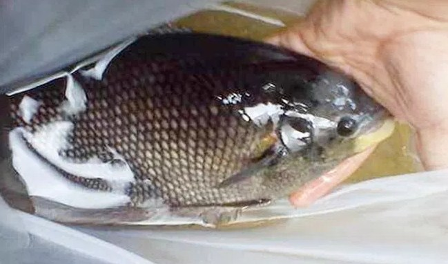
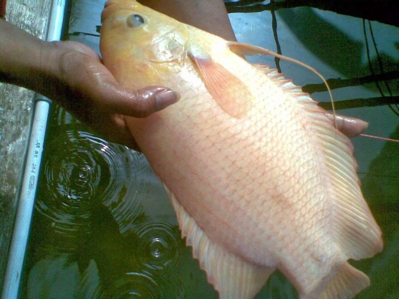

Ikan gurami soang merupakan salah satu jenis gurami yang saat ini sedang populer. Kelebihan gurami ini dapat dipanen dalam waktu sembilan bulan. Lebih cepat dari gurami biasa yang budidayanya mencapai setahun.
Tubuh umumnya berwarna keperakan dan merah muda (cerah) dengan ukuran kepala relatif kecil. Gurame porselen mempunyai kemampuan menghasilkan telur yang banyak sehingga baik untuk kegiatan pembenihan. Telur yang dihasilkan mencapai 10.000 butir/ekor induk.

Gurami Jepun
Salah satu jenis ikan gurami
Gurame jepun atau Gurame jepang ini adalah jenis gurame yang memiliki ukuran lebih kecil dari gurame soang. Ukuran gurame jepun yaitu sekitar 45 cm untuk panjangnya dengan bobot sekitar 3,5-4 kg.

Gurami Paris
Salah satu jenis ikan gurami
Gurame paris ini memiliki tubuh berwarna oranye. Namun sebenarnya, gurame jenis ini memiliki warna dasar merah cerah hanya saja ada warna putih dibagian tubuhnya sehingga tampak berwarna oranye. Berat maksimal ikan gurame paris yaitu sekitar 1,5 kg.